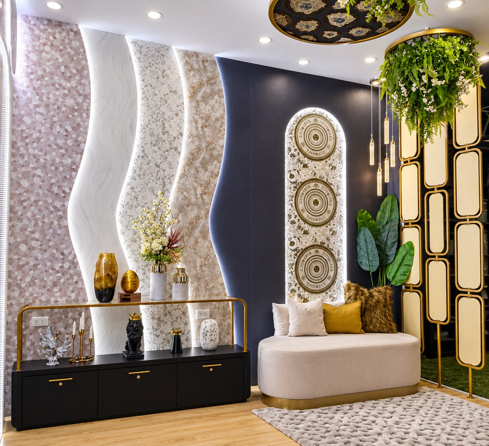
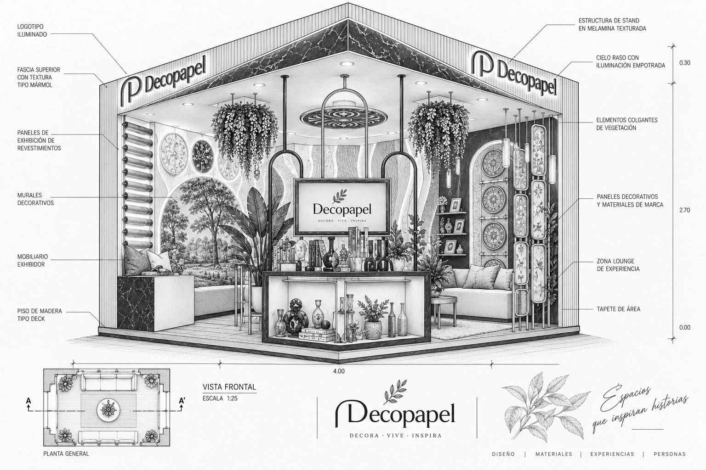
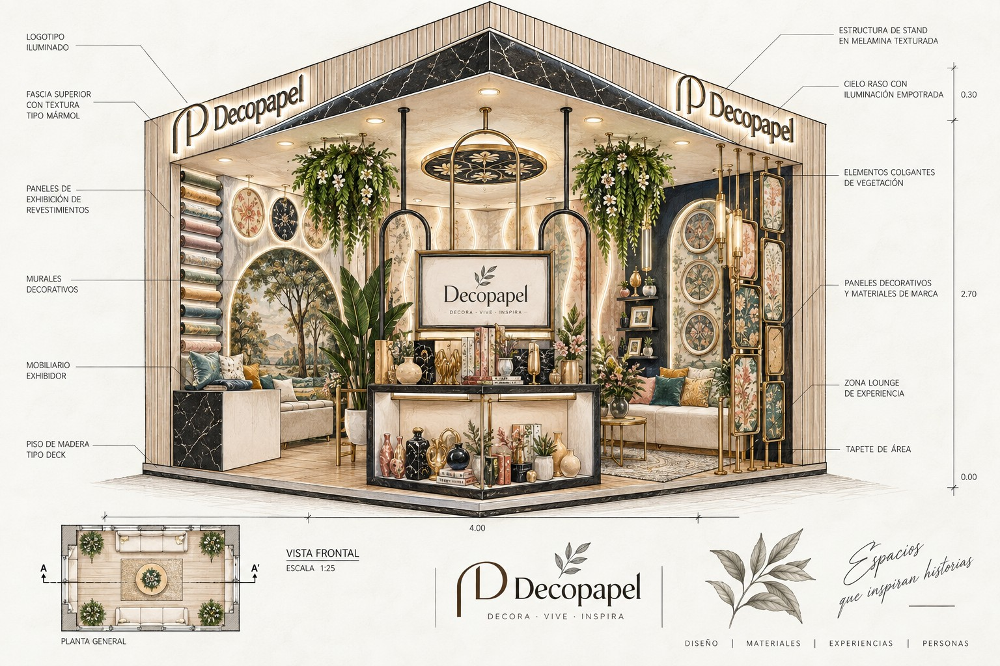
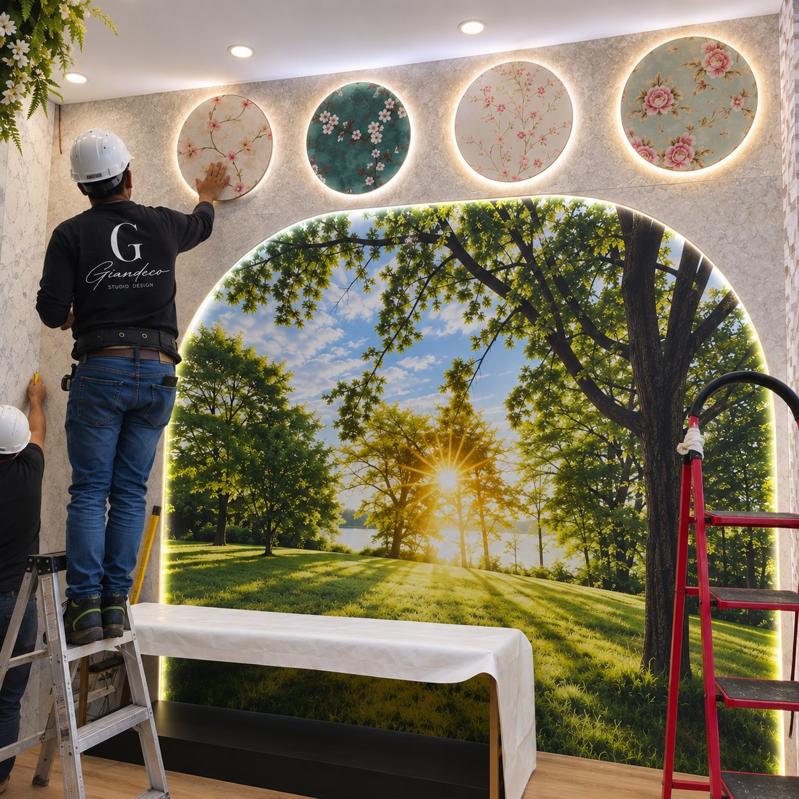
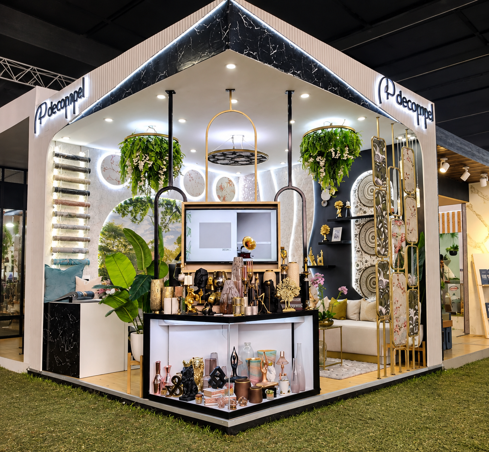

Inicio / Diseño de tiendas / Expodeco 2024
Feria de decoración · Stand para Decopapel
Un stand que se visita una sola vez, con el mismo nivel de detalle de un proyecto permanente. Esta es la historia completa: el encargo, la ficha técnica, el boceto, el montaje en obra y el resultado.

Decopapel — marca de revestimientos y papel mural — necesitaba presentar su propuesta completa en Expodeco 2024, la feria de decoración de referencia del país. El reto no era llenar un stand de feria: era montar la propuesta completa de la marca en un espacio que se visita una sola vez, con el mismo nivel de detalle de un proyecto permanente.
Cada proyecto se dibuja antes de levantarse. Primero en línea técnica, con cada material y cota especificado; después en acuarela, para aprobar color y ambiente antes de tocar una sola pared en obra.



Lo que se aprueba en papel es lo que se monta en obra. Nuestro equipo instala cada mural, cada panel y cada punto de luz en sitio, bajo la misma dirección que dibujó el proyecto — no se subcontrata la ejecución.
Presencia en la feria de decoración de referencia del país, con un stand que funcionó como showroom permanente y no solo como vitrina de feria — recorrido por categoría, vegetación colgante y un arco fotográfico pensado para quedarse en las fotos de los visitantes.

"Espacios que inspiran historias."
Del concepto a la obra, bajo una sola dirección: diseño, ficha técnica y montaje en sitio.